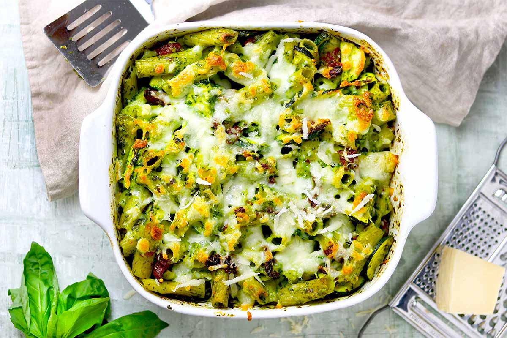

Pesto Chicken Penne Casserole

Creamy, flavorful and so easy to fix.
This meal-in-one will wow family and friends.
Makes a lot, so freeze some or halve the recipe.
Ingredients
- ½ cup seasoned bread crumbs
- ½ cup grated Parmesan cheese
- 1 tablespoon olive oil
- 1 (16 ounce) box penne pasta
- 6 cups cubed cooked chicken
- 4 cups shredded Italian cheese blend
- 3 cups fresh baby spinach
- 1 (15 ounce) can crushed tomatoes
- 1 (15 ounce) jar Alfredo sauce
- 1 (15 ounce) jar pesto sauce
- 1 ½ cups milk
Steps
-
Preheat an oven to 350 degrees F (175 degrees C).
Grease a 9x13-inch baking dish. Combine the bread
crumbs, Parmesan cheese, and olive oil in a small
bowl until evenly moistened; set aside.
-
Fill a large pot with lightly salted water and bring to
a rolling boil over high heat. Once the water is boiling,
stir in the penne, and return to a boil. Cook the pasta
uncovered, stirring occasionally, until the pasta has
cooked through, but is still firm to the bite, about 11
minutes. Drain well in a colander set in the sink.
-
Meanwhile, combine the chicken in a bowl with the Italian
cheese blend, spinach, tomatoes, alfredo sauce, pesto sauce,
and milk. Stir in the pasta once done, and scoop into the prepared
baking dish. Top with the bread crumb mixture.
-
Bake in the preheated oven until bubbly and golden brown on top, 40 to 45 minutes.